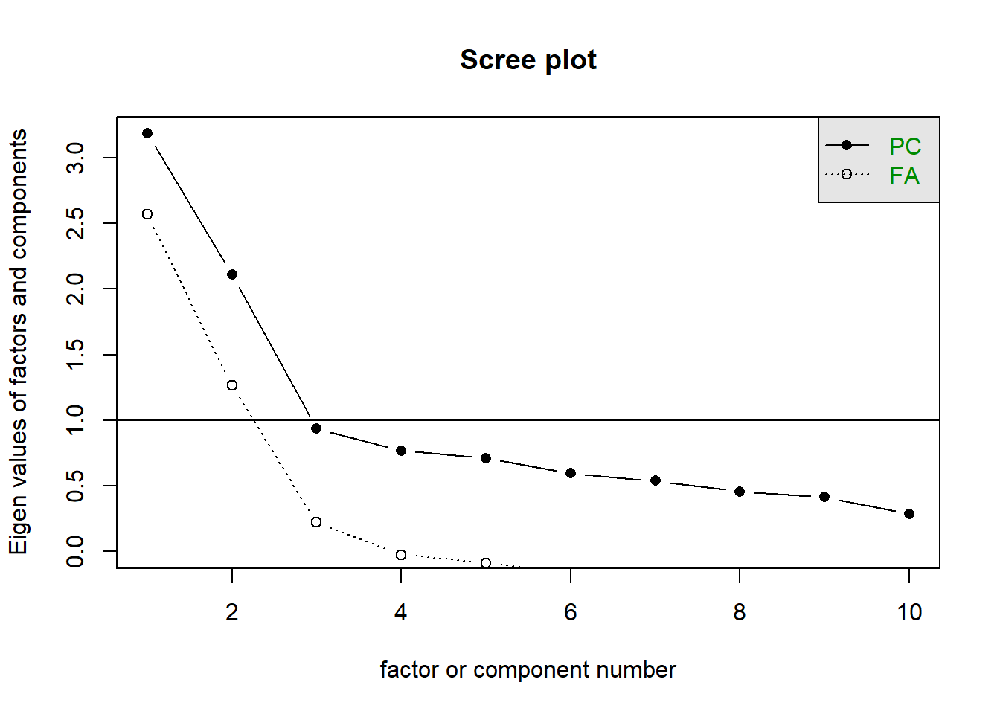
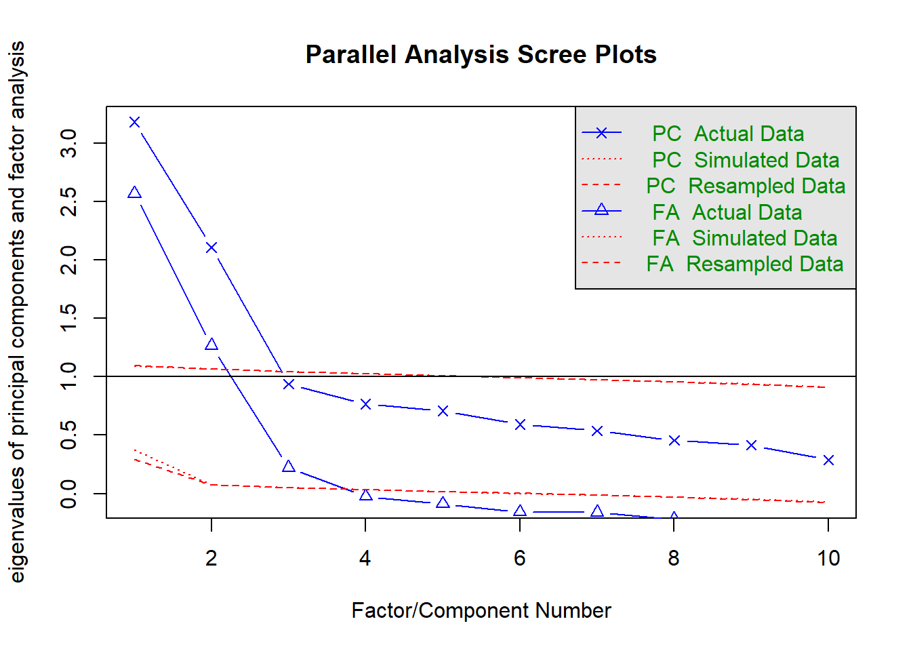

library(lavaan)
library(flexplavaan)
library(psychTools)
library(psych)
scree(bfi[c(1:5, 16:20)])
fa.parallel(bfi[c(1:5, 16:20)])
Parallel analysis suggests that the number of factors = 3 and the number of components = 2 fa(bfi[c(1:5, 16:20)], nfactors = 2)Factor Analysis using method = minres
Call: fa(r = bfi[c(1:5, 16:20)], nfactors = 2)
Standardized loadings (pattern matrix) based upon correlation matrix
MR1 MR2 h2 u2 com
A1 0.07 -0.36 0.14 0.86 1.1
A2 0.05 0.69 0.47 0.53 1.0
A3 0.03 0.76 0.56 0.44 1.0
A4 -0.05 0.47 0.24 0.76 1.0
A5 -0.12 0.60 0.39 0.61 1.1
N1 0.78 -0.03 0.61 0.39 1.0
N2 0.76 -0.02 0.58 0.42 1.0
N3 0.77 0.05 0.58 0.42 1.0
N4 0.58 -0.08 0.36 0.64 1.0
N5 0.54 0.08 0.29 0.71 1.0
MR1 MR2
SS loadings 2.44 1.78
Proportion Var 0.24 0.18
Cumulative Var 0.24 0.42
Proportion Explained 0.58 0.42
Cumulative Proportion 0.58 1.00
With factor correlations of
MR1 MR2
MR1 1.00 -0.19
MR2 -0.19 1.00
Mean item complexity = 1
Test of the hypothesis that 2 factors are sufficient.
df null model = 45 with the objective function = 2.82 with Chi Square = 7880.99
df of the model are 26 and the objective function was 0.23
The root mean square of the residuals (RMSR) is 0.04
The df corrected root mean square of the residuals is 0.05
The harmonic n.obs is 2759 with the empirical chi square 396.78 with prob < 5.7e-68
The total n.obs was 2800 with Likelihood Chi Square = 636.27 with prob < 1.6e-117
Tucker Lewis Index of factoring reliability = 0.865
RMSEA index = 0.092 and the 90 % confidence intervals are 0.085 0.098
BIC = 429.9
Fit based upon off diagonal values = 0.98
Measures of factor score adequacy
MR1 MR2
Correlation of (regression) scores with factors 0.92 0.88
Multiple R square of scores with factors 0.84 0.77
Minimum correlation of possible factor scores 0.68 0.54fa(bfi[c(1:5, 16:20)], nfactors = 3)Factor Analysis using method = minres
Call: fa(r = bfi[c(1:5, 16:20)], nfactors = 3)
Standardized loadings (pattern matrix) based upon correlation matrix
MR2 MR1 MR3 h2 u2 com
A1 -0.36 0.24 -0.17 0.17 0.83 2.2
A2 0.69 -0.04 0.09 0.47 0.53 1.0
A3 0.75 0.06 -0.05 0.57 0.43 1.0
A4 0.47 0.00 -0.07 0.24 0.76 1.0
A5 0.59 -0.05 -0.10 0.40 0.60 1.1
N1 -0.01 0.88 -0.02 0.76 0.24 1.0
N2 -0.01 0.77 0.05 0.65 0.35 1.0
N3 0.05 0.37 0.47 0.57 0.43 1.9
N4 -0.07 -0.02 0.75 0.57 0.43 1.0
N5 0.08 0.16 0.46 0.32 0.68 1.3
MR2 MR1 MR3
SS loadings 1.77 1.74 1.19
Proportion Var 0.18 0.17 0.12
Cumulative Var 0.18 0.35 0.47
Proportion Explained 0.38 0.37 0.25
Cumulative Proportion 0.38 0.75 1.00
With factor correlations of
MR2 MR1 MR3
MR2 1.00 -0.16 -0.15
MR1 -0.16 1.00 0.63
MR3 -0.15 0.63 1.00
Mean item complexity = 1.3
Test of the hypothesis that 3 factors are sufficient.
df null model = 45 with the objective function = 2.82 with Chi Square = 7880.99
df of the model are 18 and the objective function was 0.06
The root mean square of the residuals (RMSR) is 0.02
The df corrected root mean square of the residuals is 0.04
The harmonic n.obs is 2759 with the empirical chi square 121.95 with prob < 1.8e-17
The total n.obs was 2800 with Likelihood Chi Square = 176.12 with prob < 5.6e-28
Tucker Lewis Index of factoring reliability = 0.95
RMSEA index = 0.056 and the 90 % confidence intervals are 0.049 0.064
BIC = 33.25
Fit based upon off diagonal values = 0.99
Measures of factor score adequacy
MR2 MR1 MR3
Correlation of (regression) scores with factors 0.88 0.92 0.86
Multiple R square of scores with factors 0.77 0.86 0.74
Minimum correlation of possible factor scores 0.54 0.71 0.48